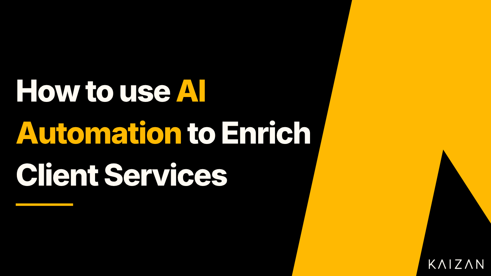

How to use AI automation to enrich Client Services

Addressing common challenges for Client Services teams:
Client Services play a fundamental role in shaping the way every organisation is able to generate and create long lasting and sustainable revenues. Enabling teams to feel supported and dynamic means equipping those employees with the skills, time and tools to continuously improve client relationships. Technology, specifically AI, has become an essential part of the technology stack for any organisation that is proactively looking to enhance their Client Services offering. There has been a seismic shift in the way organisations look to simply use technology, no longer considered a nice to have, using AI to support and enhance teams has become a fundamental turnkey of competitive advantage. According to Hubspot, 68% of organisations say scaling their organisations would be an impossibility without AI (HubSpot, 2023).
One of the most common challenges facing Client Services teams today is the ability to understand what work needs to be done and what to prioritise, not just for the client but for the organisation. Every client is completely unique and in that, they have distinct requirements which in itself creates nuances i.e. some clients are happy to wait 48hrs for a response to an email whilst others may want immediate attention. That said, all clients are similar in that they want exactly what was promised and the service they have asked for, beyond that those nuances need to be understood through relationship building. Tailoring Client Services to client needs requires understanding exactly what that specific client needs, failing to do that is one of the most common challenges which Client Services teams face. Client Service teams need the time and ability to maintain those relationships on top of the more administrative tasks. AI tools can take the pressure off teams by supporting administrative tasks and freeing up time to focus on the strategic activities that help the clients achieve their goals and increase revenues.
People will always be part of the loop, and AI makes it 100x:
Client Services has and will always be about building relationships with clients, the key focus is understanding client health and needs better, that’s why using AI is essential to providing informed decision making. Forming meaningful long term relationships with their clients is the best any agency can do. Beyond understanding client needs, upselling and increasing client revenues is another challenge Client Services teams face. These issues go hand in hand. Client Service managers are often limited on time, resulting in less time to listen to clients properly and understand their needs more generally.
This has a knock on effect on upselling new products or services which the organisation might have to offer which can provide more value but without the time to identify these opportunities they go missed. These challenges stem from the same root cause, productivity and resourcing bottlenecks. AI tools that support Client Services teams can reduce these bottlenecks and increase the opportunities for organisations to better service clients. Using data to make decisions can create a seamless client experience and utilising automation can reduce day to day administrative tasks.
How does automation improve client retention:
Driving repeat services and customer retention is all about solving client problems and consistently delivering good quality service. Keeping clients happy, as mentioned earlier, is about understanding client needs and also having visibility across the overall health of the client, particularly for more senior team members who might not be as active day to day in the account management. Providing a service that increases client satisfaction will undoubtedly result in client retention, this stems from understanding the sentiment and health of the relationship. AI can provide layers of automation and use technology to detect sentiment across calls and emails to provide a score based analysis of client sentiment. Senior leaders can view the sentiment analysis without being actively involved in the account management, giving the Client Services teams the freedom and autonomy to maintain those relationships. AI tools can improve response time by prompting teams with follow up notes and discussion points after a call. By automating the notes and discussion points, Client Services managers will trust that the AI agent will generate those prompts and can dedicate time to value added services.
Practical steps to implementing AI for Client Services:
Deploy an AI productivity tool into the organisations tech stack to improve efficiencies
Communicate with the teams what the technology is and how they’ll benefit so they adopt it more comfortably and get the best of the service
Avoiding burying your head in the sand, AI is already being adopted by the industry
Track client health and client sentiment with real time data points not just feeling, a combined approach is sensible
Client Service requires bespoke solutions for clients to improve health and retain clients and grow revenues. Professional service firms have long dodged disruption by offering bespoke services, but through the addition of AI lead automation there is an inevitability to how these services can be supercharged with the support of technology.